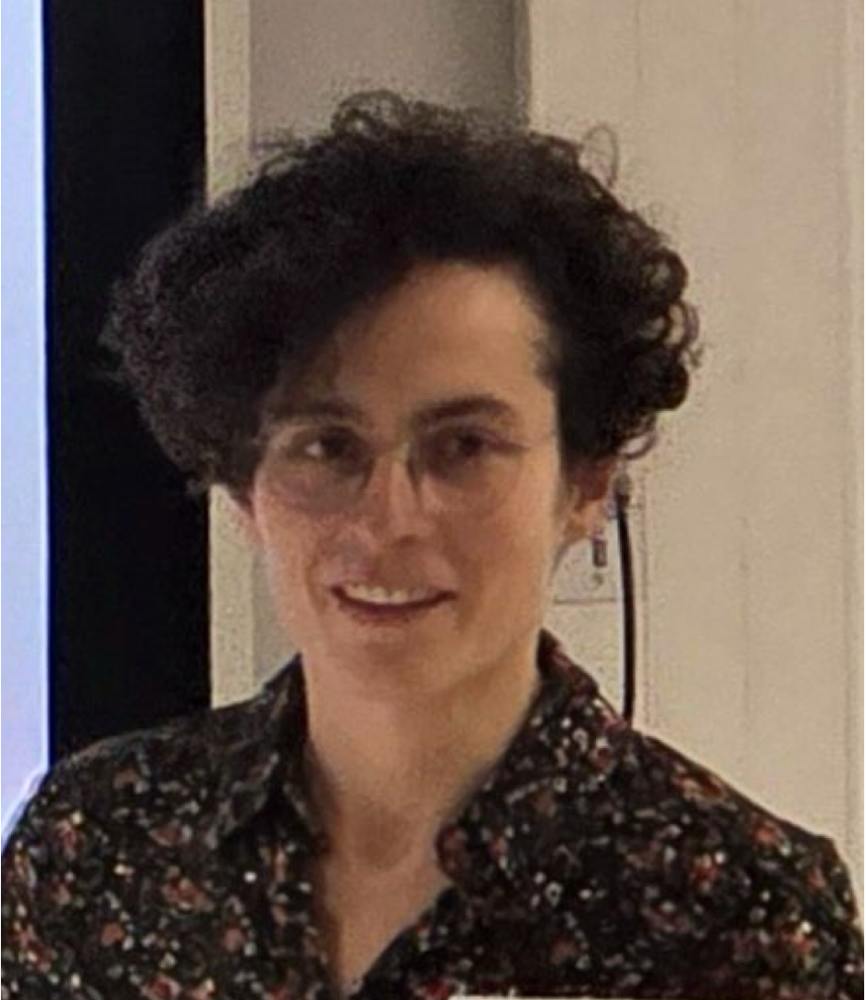

I am a research scientist at the Inria Lyon centre with the Cophy Team hosted at the Center for Neuroscience Research of Lyon (CRNL) .
I study how brain dynamics across multiple timescales give rise to cognition and neurological disorders. My work combines computational neuroscience, dynamical systems, and electrophysiology, with applications to epilepsy and associative memory.
Current projects
Epilepsy and cognition
Developing multiscale computational models and electrophysiological analyses to understand brain states impact seizures and how interictal epileptic activity alters cognition, attention, and large-scale brain communication.
Associative memory and neuronal dynamics
Studying how neural systems operating across multiple timescales support associative memory, sequence learning, and flexible behavior through dynamical systems models.